eFootball 2023
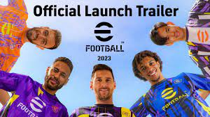eFootball 2023 (anteriormente llamado eFootball 2022)es un videojuego de simulación de fútbol desarrollado por Konami Digital Entertainment y publicado por Konami. El juego es la 21ª entrega de la serie, y fue lanzado para Microsoft Windows, PlayStation 4, PlayStation 5, Xbox One, Xbox Series X y Series S el 30 de septiembre de 2021, y para Android e iOS el 2 de junio de 2022.
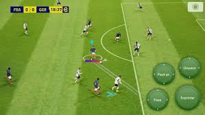El juego es el final de la serie Pro Evolution Soccer, y cambiará su nombre, debido a que se actualizará gratis anualmente. Será un videojuego gratuito con microtransacciones, actualizaciones futuras y contenidos descargables de pago opcionales,para poder tener más funciones y modos de juego offline como la Liga Máster. El videojuego tendrá juego cruzado entre las distintas plataformas.
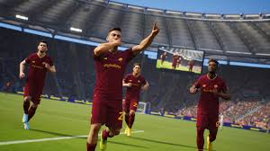3on3 FreeStyle: Rebound
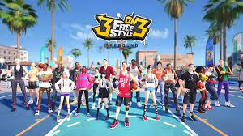3on3 Freestyle es un juego multijugador de baloncesto en línea. ¡Puedes reunir a tus amigos para enfrentarte a otros jugadores de todo el mundo! 3on3 FreeStyle proporciona un aspecto único de la experiencia multijugador cooperativa en línea. El desarrollador de 3on3 freestyle es la corporación JoyCity , una compañía formada en Corea. La plataforma compatible con 3on3 FreeStyle es Xbox One y PS4. Todos los personajes de 3on3 FreeStyle tienen un conjunto único de habilidades que establecen un lugar en su equipo. Para mejorar sus habilidades, debes comprar bebidas XP y otros artículos para subir de nivel a tu personaje.
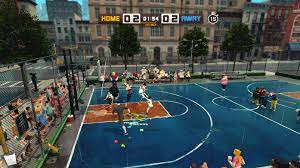3on3 FreeStyle se lanzó oficialmente en beta abierta el 6 de diciembre de 2016 para PS4 y se lanzó en beta abierta para Xbox One el 29 de agosto de 2018. El juego completo de 3 on 3 Freestyle salió para los jugadores de PS4 el 28 de febrero de 2018. La actualización masiva para Xbox One aún está por llegar. 3on3 FreeStyle es gratuito y se puede descargar a través de la tienda de PS4 y Xbox One (todavía no hay copias físicas de 3on3 FreeStyle).
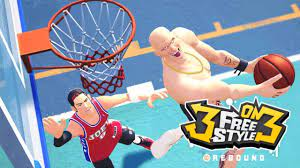WGT Golf
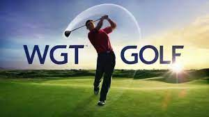El realista juego de golf gratis que adoran millones de jugadores en todo el mundo. WGT Golf cuenta con campos emblemáticos como el Wolf Creek, el Pebble Beach, el St Andrews y más. Nos enorgullecemos de ser parte de la familia Topgolf. Este juego de deportes es un juego de simulación completo creado con la mejor tecnología GPS y 3D. Los jugadores de World Golf Tour pueden usar sus cuentas web existentes y equipo de golf virtual.
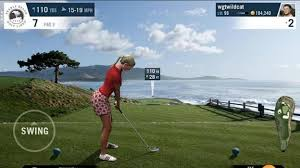es un juego de golf virtual multijugador en línea. Se juega virtualmente en campos de golf reales ubicados en los Estados Unidos, el Reino Unido, los Países Bajos, Canadá y México, utilizando una tecnología de georreferenciación fotorrealista 3D patentada. Los jugadores pueden jugar con su familia o amigos, unirse a un cuarteto o comenzar su propio juego. Los jugadores pueden elegir y competir en una variedad de campos de golf virtuales con hasta cuatro jugadores a la vez, jugar individualmente o participar en un desafío de habilidades o en torneos por premios.
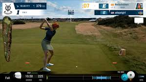Knockout City
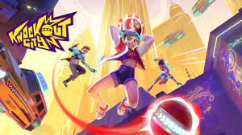Knockout City es un videojuego de acción desarrollado por Velan Studios . El editor Electronic Arts lanzó el juego para Microsoft Windows , Nintendo Switch , PlayStation 4 y Xbox One en mayo de 2021 bajo su etiqueta EA Originals. Velan Studios asumió las funciones de publicación en junio de 2022 y el juego pasó a ser un título totalmente gratuito el 1 de junio de 2022.
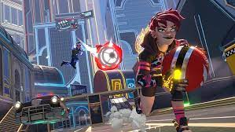Knockout City es un videojuego multijugador competitivo basado en equipos cuyas reglas de juego se asemejan al dodgeball . El objetivo del jugador es atacar a los enemigos del equipo contrario noqueándolos con una pelota. Hay varios tipos de bolas en el juego, incluida la Moon Ball, que permite al jugador que sostiene la bola saltar más alto, y la Bomb Ball, que es una bomba de relojería que explota al impactar. Un jugador también puede lanzar a otro jugador como una pelota. Cuando está listo para lanzar una pelota, el jugador apunta y fija a un enemigo; manteniendo presionado el botón de lanzamiento, carga la pelota para un tiro más rápido que puede ser más difícil de atrapar. Un lanzamiento exitoso no depende de la exactitud o la precisión del lanzamiento, sino del posicionamiento y la estrategia del jugador. Los jugadores pueden esquivar o atrapar una pelota que se les arroja, y reaparecerán después de ser golpeados por una pelota dos veces. El jugador también puede fingir lanzar una pelota y placar a un oponente que sostiene una pelota. A medida que el jugador avanza en el juego, recibirá Holobux, que se puede gastar en Brawl Shop para desbloquear varios elementos de personalización
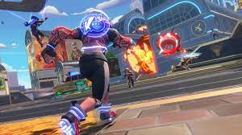JaDa Fishin'
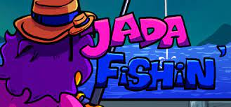JaDa Fishin' es un simulador de pesca / juego inactivo gratuito dibujado a mano con dibujos animados. Zach, el artista favorito del mundo, va al estanque local a pescar. Zach no sabía que la pesca adquiriría un significado completamente nuevo cuando encuentre todo tipo de criaturas increíbles.
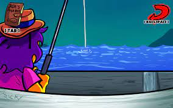Una vez que comienza el juego, esperas a que aparezca un pez en un evento de tiempo rápido. Una vez que Zach engancha un pez, presiona "A" en el controlador o la barra espaciadora, las veces suficientes para atrapar el pez. Si enrollas el pez a tiempo, lo atraparás.
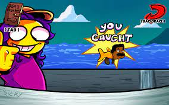